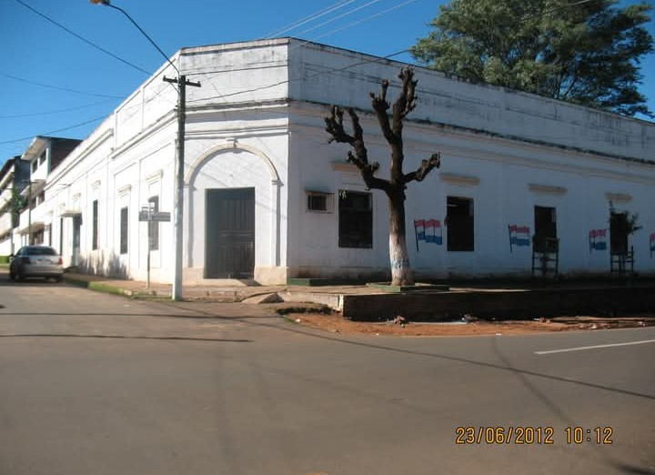
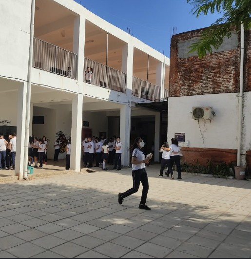
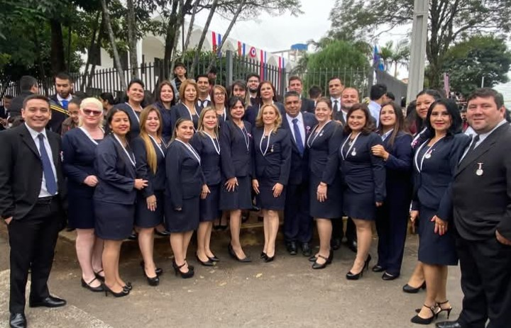
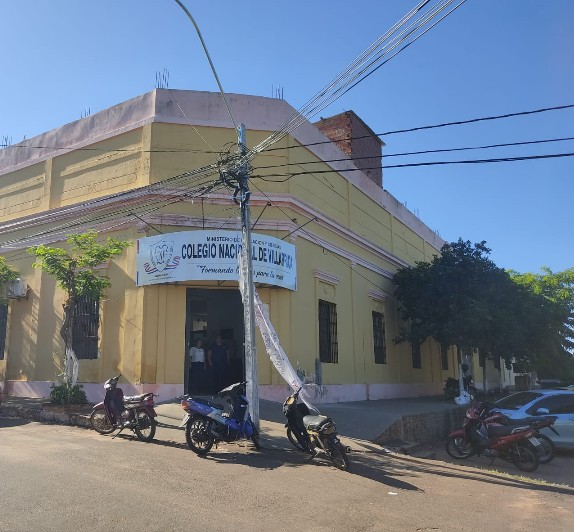

Colegio Nacional de Villarrica
Portal educativo de investigación, identidad institucional y trayectoria histórica desarrollado íntegramente por estudiantes del 1.º BTI.
Fundado en 1970
Establecido el 14 de mayo de 1970 en coincidencia con el tetracentenario de Villarrica del Espíritu Santo (1570-1970).
Pibe Cáceres
Impulsado pedagógicamente por el Profesor Pedro Rubén Cáceres, primer director e ícono institucional.
Proyecto Feria 2026
Página educativa elaborada por estudiantes de 1.º BTI, con historia, imágenes y actividades interactivas.
Fundación e Historia Institucional
El Colegio Nacional de Villarrica fue fundado formalmente el 14 de mayo de 1970. La fecha de inauguración fue fijada para conmemorar simultáneamente las Fiestas Patrias paraguayas y el 400.º aniversario de la fundación de la ciudad de Villarrica del Espíritu Santo (1570–1970).
Contexto del Nombre Inicial y Transición Democrática
Durante sus primeros años, en concordancia con los usos oficiales de la época, la institución operó bajo la denominación de Colegio Nacional "Gral. Alfredo Stroessner". Tras los acontecimientos políticos de febrero de 1989 y la apertura democrática, la comunidad educativa formalizó la restitución de su denominación identitaria regional: Colegio Nacional de Villarrica (CNV).
Hitos Históricos de la Institución
Inauguración y Apertura
Apertura oficial del colegio bajo la dirección del Prof. Pedro Rubén "Pibe" Cáceres durante el Cuatricentenario de Villarrica.
Consolidación Secundaria y Primeros Docentes
Crecimiento continuo del número de alumnos y primeras promociones de bachilleres que funcionan en los turnos tarde y noche.Se recuerda con Gratitud a los primeros docentes que pasaron por nuestras aulas:María Elena Doldan, Brunilda Madelaire, Ramón Mieres, Miguel Ángel Paniagua, Ramón Guerrero, Elsa de Filippi, Alba Buscio de Velázquez, Ángel Roa, Pedro Ramón Martinez, Miguel Ángel Jara, Aida Andino, Mateo Peralta, Artemio Franco Preda, Alodia Franco Preda, entre muchos otros. Los primeros directores del Colegio fueron: Asunción Buscio de Cáceres y Don Rubén Cáceres.
Redenominación Oficial
Sustitución oficial de la denominación inicial Liceo Nacional Presidente Stroessner por "Colegio Nacional de Villarrica" por el inicio de la Era Democrática.
Actualidad
Actualmente funciona los turnos mañana, tarde y noche con los siguientes niveles y modalidades: Educación Escolar Básica, Bachilleratos Científicos con énfasis en Ciencias Sociales, Ciencias Básicas, Letras y Artes y el Bachillerato Técnico énfasis en Contabilidad y énfasis en Informática. Hoy en día se encuentra al mando como Directora la Mg. Deicy Verdecchia en los turnos mañana y tarde y el Lic. Danny Sosa en el turno noche.
Prof. Pedro Rubén "Pibe" Cáceres
Gestor y figura central en la creación del Colegio Nacional de Villarrica en 1970.
El Profesor Pedro Rubén Cáceres, recordado cariñosamente por generaciones de estudiantes como "Don Pibe", encabezó las gestiones educativas y administrativas ante el Ministerio de Educación para hacer posible la apertura del establecimiento en mayo de 1970.
Misión y Visión Institucional
Misión del CNV
La creación de espacios que propicien la formación integral de educandos con competencias sociales, afectivas y cognitivas a fin de desarrollar una buena calidad de vida.
Visión del CNV
Colegio Nacional de Villarrica, centro educativo líder en la formación de jóvenes con valores humanos y, competentes para enfrentar los desafíos del mundo actual.
Textos de la misión y la visión publicados por el Colegio Nacional de Villarrica en su reseña institucional de 2024.
Identidad y Valores Institucionales
Azul Marino / Rey
Simboliza la seriedad académica, la firmeza de principios y la lealtad comunitaria.
Blanco
Representa la pureza, la transparencia administrativa y el afán continuo de conocimiento.
Lema institucional
«Formando líderes para la vida»
Valores del Colegio Nacional de Villarrica
- Solidaridad
- Tolerancia
- Respeto
- Honestidad
- Patriotismo
- Responsabilidad
Valores publicados por el Colegio Nacional de Villarrica. Lema tomado de la insignia institucional del 56.º aniversario (1970–2026), aportada por el docente.
Muro Histórico de Recuerdos
Espacio interactivo para exalumnos, docentes y estudiantes. Los mensajes se guardan localmente en tu navegador.
Mensajes Registrados
Galería de Imágenes del CNV
Espacios reservados para agregar fotografías de la historia, las actividades y la comunidad del Colegio Nacional de Villarrica.



